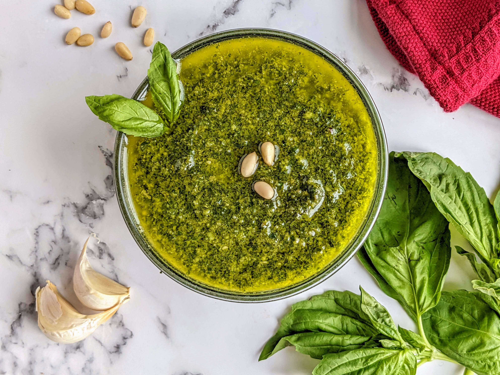

Yummy Vegan Pesto Classico

Description
This is a classic recipe I use and love. Nutritional yeast is substituted for the traditionally used dairy.
Try adding sun-dried tomato slices post-completion for an added boost of rich flavor. P.S. - It also freezes beautifully.
Tasty on pasta, bread, sandwiches, omelets, etc.
Ingredients
- ⅓ cup pine nuts
- ⅔ cup olive oil
- 5 cloves garlic
- ⅓ cup nutritional yeast
- 1 bunch fresh basil leaves
- salt and pepper to taste
Directions
- Place the pine nuts in a skillet over medium heat, and cook, stirring constantly, until lightly toasted.
- Gradually mix the pine nuts, olive oil, garlic, nutritional yeast, and basil in a food processor, and process until smooth. Season with salt and pepper.
- Enjoy! ^‿^
Nutrition Facts
Per serving:
- 107 calories
- protein 2.2g
- carbohydrates 1.7g
- fat 10.6g
- sodium 1.5mg
Return to Homepage